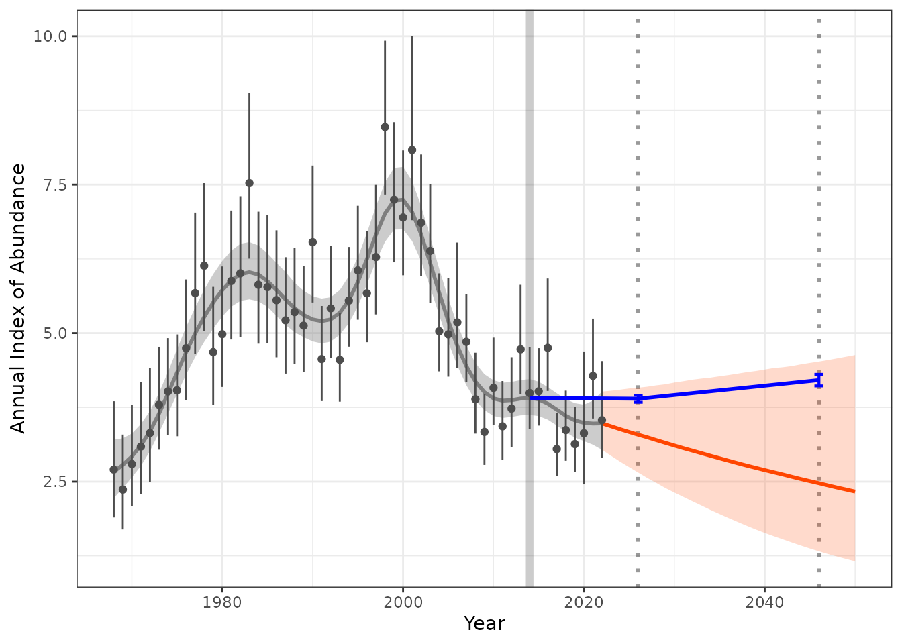

Use annual indices and uncertainty to estimate trends over time
Source:vignettes/Using-annual-indices-datasets.Rmd
Using-annual-indices-datasets.RmdWe can use the birdtrends package to model trends
overtime based on annual indices datasets. These include information on
year of data, index, and some form of uncertainty.
Note: this vignette assumes you had already followed the steps outlined here
2. Model the annual indices based on input data of observed annual indices.
In many cases, we may not have access to the breadth of information retained in estimating the original modeled annual indices.
An example data set is provided within this package. This is an annual estimate on the Pacific Wren (” “), generated using the bbsBayes2 package. This data was kindly provided by A.C. Smith.
head(annual_indicies_data)
#> # A tibble: 6 × 4
#> year index index_q_0.025 index_q_0.975
#> <dbl> <dbl> <dbl> <dbl>
#> 1 1968 2.70 1.90 3.85
#> 2 1969 2.37 1.70 3.29
#> 3 1970 2.80 2.09 3.79
#> 4 1971 3.09 2.29 4.18
#> 5 1972 3.32 2.49 4.42
#> 6 1973 3.79 3.04 4.77In this example data set we have an annual index from 1968 to 2022, along with credible intervals of 2.5% and 97.5%.
2.1 Fit a Bayesian Heirachial GAM (HGAM)
We can fit a hierarchical Bayesian General Additive Model (HGAM) to estimate the overall trend for the species over all years, or a specific date range. This model fits a smooth time-series function (i.e., the GAM) to the log-transformed annual estimates of relative abundance, while accounting for the uncertainty of each annual estimate (i.e., the Hierarchical aspect). This is a measurement-error model that assumes independence in the errors of each annual estimate. This independence assumption will be false for many sets of estimates (e.g., any estimates drawn from any model that includes some explicit temporal structure), but making this independence assumption is reasonable in the absence of a known autocorrelation structure in the annual errors.
indat1 <- annual_indicies_data
fitted_data <- fit_hgam(indat1, start_yr = NA, end_yr = NA, n_knots = NA)
#> Running MCMC with 4 parallel chains...
#>
#> Chain 1 finished in 2.0 seconds.
#> Chain 2 finished in 2.1 seconds.
#> Chain 4 finished in 2.1 seconds.
#> Chain 3 finished in 2.3 seconds.
#>
#> All 4 chains finished successfully.
#> Mean chain execution time: 2.1 seconds.
#> Total execution time: 2.5 seconds.
#fitted_data <- fit_hgam(indat1, start_yr = 1990, end_yr = 2014, n_knots = NA)2.2 Explore the results
Select a subset of all the fitted HGAM models and reformat to long format. In this example we selected 100 rows for simplicity.
sel_hgams <- fitted_data %>%
dplyr::slice_sample(., n = 100) %>%
dplyr::mutate(draw = seq(1, 100, 1)) %>%
tidyr::pivot_longer(., cols = !starts_with("d")) |>
dplyr::mutate(yearn = as.integer(name) - min(as.integer(name)))
We can reformat our original data to use in the plot
min_year <- as.numeric(min(sel_hgams$name))
max_year <- as.numeric(max(sel_hgams$name))
indat1 <- indat1 |>
filter(year >= min_year & year <= max_year)%>%
dplyr::mutate(yearn = as.integer(year) - min(as.integer(year))) Now we can plot the predicted posterior distributions of 100 draws, along with the raw annual indices data provided.
comp_plot <- ggplot2::ggplot(data = sel_hgams,
ggplot2::aes(x = yearn,y = value,
group = draw, colour = draw))+
ggplot2::geom_pointrange(data = indat1,
ggplot2::aes(x = yearn, y = index,
ymin = index_q_0.025,
ymax = index_q_0.975),
inherit.aes = FALSE,
alpha = 0.3)+
ggplot2::geom_line(alpha = 0.3)+
ggplot2::scale_colour_viridis_c() +
ggplot2::scale_y_continuous(trans = "log10")+
ggplot2::theme_bw()
comp_plot
3. Estimate trends
We can use our modeled values to estimate a trend over a given period of time. This can be used to predict into the future.
First we need to reformat our fitted data. We can modify the object ‘sel_hgams’ above or reformat the raw output.
We will convert our data to long form, with the following columns “draw”, “year”, and “proj_y”. Note if using the output from the “fit_hgam” we can use the code below.
ldf <- tibble::rowid_to_column(fitted_data, "draw") %>%
tidyr::pivot_longer(., cols = !starts_with("d")) %>%
dplyr::rename('year' = name, "proj_y" = value)%>%
dplyr::mutate(year = as.integer(year))This creates a dataset in which each row contains an estimated indices per year and per posterior draw (n = 4000).
head(ldf)
#> # A tibble: 6 × 3
#> draw year proj_y
#> <int> <int> <dbl>
#> 1 1 1968 2.70
#> 2 1 1969 2.86
#> 3 1 1970 3.03
#> 4 1 1971 3.22
#> 5 1 1972 3.44
#> 6 1 1973 3.70Now we can estimate a trend based on a given time internal and method of estimating trends. Where no dates are specified, the minimum and maximum years will be used. Two methods are available to estimate trends; 1) Geometric mean and 2) Linear regression.
trend_sm <- get_trend(ldf, start_yr = 2014, end_yr = 2022, method = "gmean")
head(trend_sm)
#> # A tibble: 6 × 3
#> draw trend_log perc_trend
#> <int> <dbl> <dbl>
#> 1 1 0.00108 0.108
#> 2 2 -0.0249 -2.46
#> 3 3 -0.0151 -1.50
#> 4 4 -0.0183 -1.81
#> 5 5 -0.00842 -0.839
#> 6 6 -0.0190 -1.88We can summarise the trend estimates to provide a median and confidence internal
trend_sm |>
dplyr::mutate(trend_q0.025 = quantile(trend_log, 0.025),
trend_q0.500 = quantile(trend_log,0.500),
trend_q0.975 = quantile(trend_log,0.975)) |>
dplyr::select(c(trend_q0.025, trend_q0.500, trend_q0.975)) |>
distinct()
#> # A tibble: 1 × 3
#> trend_q0.025 trend_q0.500 trend_q0.975
#> <dbl> <dbl> <dbl>
#> 1 -0.0353 -0.0143 0.006464. Predict trend
We can now use our modeled annual indices and estimated trends for our given years to predict into the future.
preds_sm <- predict_trend(ldf, trend_sm, start_yr = 2023, proj_yr = 2050)
#> hold tight, running the numbers!
#> ================================================================================
head(preds_sm)
#> # A tibble: 6 × 4
#> draw year proj_y pred_ind
#> <int> <dbl> <dbl> <dbl>
#> 1 1 1968 2.70 2.70
#> 2 1 1969 2.86 2.86
#> 3 1 1970 3.03 3.03
#> 4 1 1971 3.22 3.22
#> 5 1 1972 3.44 3.44
#> 6 1 1973 3.70 3.705. Plot the prediction
Now lets plot the results, to make a “pretty plot” we will use all the steps we worked through above. This includes 1) raw observed indices, 2) modeled indices, 3) predicted indices generated from our trends.
hgams_plot <- plot_trend(raw_indices = indat1,
model_indices = ldf,
pred_indices = preds_sm,
start_yr = 2014,
end_yr = 2022)
Additional targets and trend estimates
We may also want to track how our predictions are tracking in relation to short term trends. For example species identified under the partners in flight have short and long term trends.
For example we may identify a population change from a given time step (i.e. 2014) to a short and long term trend as a percentage change in population.
For example we may have a short term target of 2024 with a range of -2% to 1% we can calculate what the annual index targets range will be. This can be added to our plots to identify the range we need to meet or how our predictions are tracking.
index_baseline <- get_targets(model_indices = ldf,
ref_year = 2014,
st_year = 2026,
st_lu_target_pc = -2,
st_up_target_pc = 1,
lt_year = 2046,
lt_lu_target_pc = 5,
lt_up_target_pc = 10)
hgams_plot_target <- plot_trend(raw_indices = indat1,
model_indices = ldf,
pred_indices = preds_sm,
start_yr = 2014,
end_yr = 2022,
ref_yr = 2014,
targets = index_baseline)
Estimate confidence of reaching targets
We can use the output of the trends to estimate uncertainty around meeting future trends. In the example above we can estimate the probability that we will meet our short- term or long-term targets.
Our theoretical targets for the above example is short term (decrease of 2% to increase of 1%) and longterm target (2046) is (increase between 5 to 10% )
prop_st <- calculate_probs(predicted_trends = preds_sm,
ref_year = 2014,
targ_year = 2026,
prob_decrease = 2,
prob_increase = 1)
prop_lt <- calculate_probs(predicted_trends = preds_sm,
ref_year = 2014,
targ_year = 2046,
prob_increase = c(5,10))
prop_st
#> # A tibble: 1 × 4
#> prob_decrease_2_percent prob_increase_1_percent ref_year target_yr
#> <dbl> <dbl> <dbl> <dbl>
#> 1 88.9 7.18 2014 2026
prop_lt
#> # A tibble: 1 × 4
#> prob_increase_5_percent prob_increase_10_percent ref_year target_yr
#> <dbl> <dbl> <dbl> <dbl>
#> 1 6.1 5.03 2014 2046
# predicted_trends = preds_sm
# calc_quantiles <- stats::quantile
# quantiles = c(0.025, 0.05, 0.25, 0.75, 0.95, 0.975)
# prob_decrease = c(0,2,50)
# prob_increase = c(0,2,50)
#
#
#
#
# calc_prob_crease <- function(x, p, type = "decrease") {
# if(type == "decrease") f <- function(p) length(x[x < (-1 * p)]) / length(x)
# if(type == "increase") f <- function(p) length(x[x > p]) / length(x)
#
# vapply(p, FUN = f, FUN.VALUE = 1.1) %>%
# stats::setNames(paste0("prob_", type, "_", p, "_percent"))
# }
#
#
#
#
# # for each draw subtract target year from ref year (2024) - 2014
# aa <- filter(predicted_trends, year %in% c(2014, 2024)) |>
# select(-proj_y)
#
#
# aa <- pivot_wider(aa, values_from = pred_ind, names_from = year)
#
# ab <- aa |>
# mutate(ch = `2024`/`2014`) |>
# rowwise() |>
# mutate(ch_pc = 100 * (stats::median(ch) -1)) |>
# dplyr::ungroup() %>%
# mutate(percent_change_ave = 100 * (stats::median(ch)-1),
# #percent_change_q_0.025 = 100 * (stats::quantile(ch, probs = 0.025)-1),
# #percent_change_q_0.05 = 100 * (stats::quantile(ch, probs = 0.05)-1),
# #percent_change_q_0.25 = 100 * (stats::quantile(ch, probs = 0.25)-1),
# #percent_change_q_0.75 = 100 * (stats::quantile(ch, probs = 0.75)-1),
# #percent_change_q_0.95 = 100 * (stats::quantile(ch, probs = 0.95)-1),
# percent_change_q_0.975 = 100 * (stats::quantile(ch, probs = 0.975)-1))
#
#
#
# # Model conditional probabilities of population change during trends period
# if(!is.null(prob_decrease)) {
# ab <- ab %>%
# dplyr::mutate(
# pch_pp = purrr::map_df(.data$ch_pc, calc_prob_crease,
# .env$prob_decrease, type = "decrease")) %>%
# tidyr::unnest("pch_pp")
# }
#
# if(!is.null(prob_increase)){
# ab <- ab %>%
# dplyr::mutate(
# pch_pp = purrr::map_df(.data$ch_pc, calc_prob_crease,
# .env$prob_increase, type = "increase")) %>%
# tidyr::unnest("pch_pp")
# }
#
#
# # filter and select only sections needed.
#
# out <- ab |>
# mutate(across(starts_with("prob"), ~ sum(.x, na.rm = TRUE)/length(.x)*100)) %>%
# select(starts_with("p"))%>%
# distinct()
#